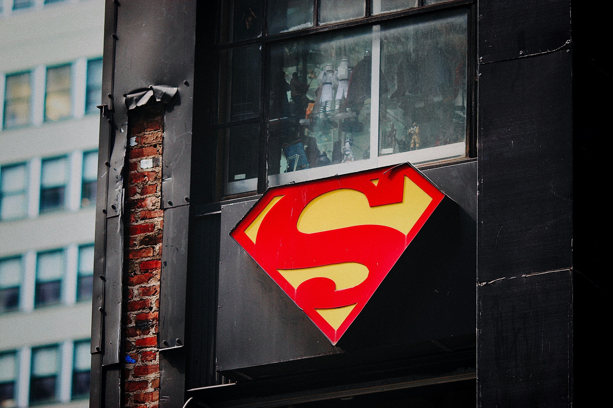

Web developer in Nairobi, Kenya
Leon Mwangi
I build clean, responsive websites with strong structure, smooth layouts, and the kind of polish that makes a first impression feel intentional.

Based in
Nairobi
Building
Responsive Web
Responsive layouts
Accessible markup
Clean visual systems
Project-ready habits
About me
Curious, practical, and serious about getting better with every build.
Hello, I am Leon Mwangi, a web developer based in Nairobi. I enjoy turning ideas into websites that are clear, easy to use, and polished across screens.
I am growing through hands-on projects and building a strong foundation in frontend development. My goal is to become a full-stack developer who can design, build, and ship useful web applications.
Request CVStructure
Semantic HTML, clear content flow, and accessible page foundations.
Interface
CSS Grid, Flexbox, spacing systems, hover states, and responsive design.
Momentum
Consistent practice, GitHub publishing, and improving through feedback.
Skills
The tools I am using to build sharper digital experiences.
HTML5
Semantic structure, accessible content, forms, links, and maintainable page foundations.
CSS3
Responsive layouts, visual hierarchy, animations, Grid, Flexbox, and polished UI details.
JavaScript
Browser fundamentals, interactivity, DOM updates, and problem-solving practice.
GitHub
Version control, project publishing, portfolio hosting, and sharing progress online.
Projects
Recent work built with focus, clarity, and a growing frontend toolkit.
Featured build
Personal Portfolio Website
A responsive portfolio built with HTML and CSS to introduce my profile, skills, projects, and contact details with a polished visual direction.
Request Project LinkContact
Have an opportunity or idea?
I am open to internships, collaborations, freelance practice projects, and conversations about building better websites.